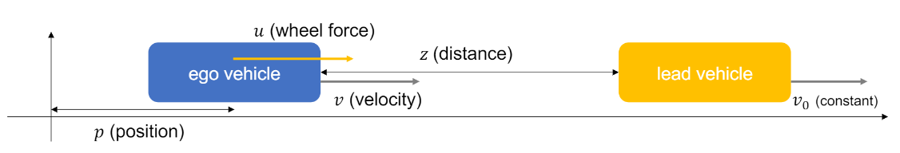

Case Study
In this section, we are going to show some practical examples
Control Lyapunov Function (CLF) - Control Barrier Function (CBF) - Quadratic Programming (QP) is an approach for motion planning. For different control input, CLF and CBF constraint may have different relative degrees. Although there are no specific Barrier function which are suitable for every situations, we can somehow use energy-like form to test whether it satisfy the requirements of Lyapunov or Barrier function.
In the following part, we illustrate an example (The example is cited from Github):
For an adaptive cruise-control problem, whose general form of dynamics of the systems are given by:
To simplify, just written as:
Example 1:
We define corresponding parameters:
State \(x = \begin{bmatrix} p \\ v \\ z \end{bmatrix} \in \mathbb{R}^3\)
Control input \(u \in \mathbb{R}\)
Dynamics \(\dot x = \begin{bmatrix} v \\ -\frac{1}{m}F_r(v) \\ v_0 - v\end{bmatrix} + \begin{bmatrix} 0 \\ \frac{1}{m} \\ 0\end{bmatrix}u\), where \(F_r(v) = f_0 + f_1v + f_2v^2\) is the resistance.
Input constraints \(-mc_dg \leq u \leq mc_ag\)
Stability objective \(v \to v_d\) (\(v_d\): desired velocity)
Safety objective \(z \geq T_hv\) (\(T_h\): lookahead time)
Lyapunov function \(V(x) = (v - v_d)^2\)
CLF constraint \((v - v_d)\{\frac{2}{m}(u - F_r) + \lambda(v - v_d)\} \leq \delta\)
Barrier function \(h(x) = z - T_hv - \frac{\frac{1}{2}(v-v_0)^2}{c_dg}\)
CBF constraint \(\frac{1}{m}(T_h + \frac{v - v_0}{c_dg})(F_r(v) - u) + \gamma(v_0 - v + z - T_hv - \frac{(v - v_0)^2}{2c_dg}) \geq 0\)
QP \(1/2\begin{bmatrix} u \\ \delta \end{bmatrix}^T \begin{bmatrix} \frac{4}{m^2} & 0 \\ 0 & 3\end{bmatrix}\begin{bmatrix} u \\ \delta \end{bmatrix} + \begin{bmatrix} -\frac{2F_r}{m^2} & 0\end{bmatrix}\begin{bmatrix} u \\ \delta \end{bmatrix}\)
Then we can set up some initial values of parameters:
Initial state \(x = \begin{bmatrix} 0 \\ 20 \\ 100 \end{bmatrix}\)
Lead vehicle velocity \(v_0 = 14\)
Desired velocity \(v_d = 24\)
Weight \(m = 1650\), \(g = 9.81\)
Friction \(f_0 = 0.1\), \(f_1 = 5.0\), \(f_2 = 0.25\)
Input constraints \(c_a = 0.3\), \(c_d = 0.3\)
Lookahead time \(T_h = 0.8\)
CLF parameter \(\lambda = 5\)
CBF parameter \(\gamma = 5\)
Therefore we have cost function:
Along with following constraints:
By solving this QP problem with unisolver, we can finally get the answer.
Reference
A. D. Ames, X. Xu, J. W. Grizzle and P. Tabuada, “Control Barrier Function Based Quadratic Programs for Safety Critical Systems,” in IEEE Transactions on Automatic Control, vol. 62, no. 8, pp. 3861-3876, Aug. 2017, doi: 10.1109/TAC.2016.2638961.